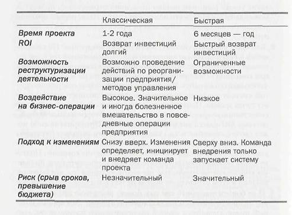

ћы приводим две практически пол€рные методологии внедрени€ ERP-систем. Ќазовем их условно быстра€ и классическа€. ’от€ у большинства консалтинговых компаний и компаний-поставщиков систем, как правило, существуют свои собственные названи€ (зарегистрированные методологии) ведени€ проектов, тем не менее все они, по мнению авторов, могут быть сведены к двум перечисленным. ¬ таблице привод€тс€ краткие сравнительные характеристики данных конфигураций, ниже - их подробное описание.
 |